质点力学把物体压缩成一个点，刚体力学则第一次把“物体怎样转”变成严格的力学问题。刚体是带有内部几何约束的质点系：任意两点距离不变。对含不共线物质点的一般刚体，局部位形只需六个参数。描述整体运动的惯性信息可归纳为总质量、质心和惯量张量，内部作用则按理想刚体约束处理。
本章的主线是： \[\text{刚体约束}\ \longrightarrow\ \text{自由度与角速度} \ \longrightarrow\ \text{惯量张量} \ \longrightarrow\ \text{角动量定理} \ \longrightarrow\ \text{欧拉方程与陀螺}.\] 学习时反复问三个问题：刚体的位形需要几个独立参数？角动量为什么不总与角速度平行？在哪个参考系里写动力学方程最简单？
第四章允许质点间距微变，以质量和刚度二次型描述内部振动；本章冻结内部距离，保留整体平动与姿态变化。先处理惯性、反力和滚动，再区分无力矩自由转动、重力驱动的进动与内部电机交换角动量。
5.1刚体运动学
5.1.1刚体与自由度
定义 1.1 (刚体). 若质点系中任意两个质点之间的距离在运动过程中保持不变，则称该质点系为刚体。对任意两个质点 \(i,j\)，有 \[|\mathbf{r}_i-\mathbf{r}_j|^2=c_{ij},\] 其中 \(c_{ij}\) 为常数。
刚体是宏观物体的理想化模型。真实物体在受力时会形变，但当形变远小于整体运动尺度时，把物体看成刚体是很好的近似。若形变本身重要，则必须把它当作弹性体，额外引入振动自由度。
确定一个刚体的位形，只需要确定它上面三个不共线点的位置。三个不共线点构成一个刚性三角形；在选定初始形状与手性、并由连续刚体运动相连的位形分支上，其余物质点相对该三角形的位置也固定。仅凭三点距离的代数关系会有镜像歧义，反射不由连续的正常转动产生。三个点共有 \(9\) 个坐标，但三点之间的三个距离固定，因此独立坐标数为 \[9-3=6.\] 这给出刚体最重要的运动学结论：
含不共线物质点的一般自由刚体在三维空间中有 6 个自由度：三个描述质心平动，三个描述绕质心的转动。
严格共线且不带额外可辨取向标记的理想点列，绕自身线转动不改变位形，只有5个位形自由度；单个质点只有3个。真实细杆截面通常可辨，仍有6个。
刚体的常见运动模式可以按约束分类：
| 运动类型 | 自由度 | 约束特征 |
|---|---|---|
| 平动 | 3 | 刚体上所有点速度相同 |
| 定轴转动 | 1 | 一条直线上的点固定 |
| 平面平行运动 | 3 | 每点始终平行于某一固定平面 |
| 定点转动 | 3 | 一个点固定，绕该点任意转动 |
| 一般运动 | 6 | 无额外约束 |
平动时，刚体上每一点的速度和加速度都相同，因此可以用质心代表整个刚体。定轴转动时，只有绕过固定轴的转角一个独立变量。平面平行运动可以分解为质心的平面运动与绕质心的转动。定点转动没有平动，但仍需要三个角度描述转轴的方向和绕轴转过的角度。
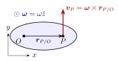
5.1.2有限转动与无限小转动
刚体的转动与平动有一个本质区别：绕不同轴的有限转动一般不满足交换律。把一本书先绕竖直轴转 \(90^\circ\)，再绕水平轴转 \(90^\circ\)，与先绕水平轴再绕竖直轴，最终姿态不同。因此，有限转动不能用一个普通的矢量简单相加。
设刚体绕单位轴 \(\hat{\mathbf{e}}\) 转过有限角度 \(\theta\)，对应的转动矩阵记为 \(R(\hat{\mathbf{e}},\theta)\)。连续两次转动对应矩阵乘积 \[R_2R_1,\] 而绕不同轴时一般有 \[R_2R_1\ne R_1R_2.\] 绕同一固定轴的有限转动仍然可以交换。
但当转角趋于零时，情况发生变化。取转轴过坐标原点，设无限小转动矢量为 \[\delta\mathbf{\theta}=\delta\theta\,\hat{\mathbf{e}}.\] 绕该轴的无限小转动矩阵可以写成 \[R(\hat{\mathbf{e}},\delta\theta) =\mathbf 1+[\delta\mathbf{\theta}]_\times+O(\delta\theta^2),\] 其中 \([\delta\mathbf{\theta}]_\times\) 是由 \(\delta\mathbf{\theta}\) 生成的反对称矩阵。作用于位矢 \(\mathbf{r}\)，得到 \[\delta\mathbf{r} =R\mathbf{r}-\mathbf{r} =[\delta\mathbf{\theta}]_\times\mathbf{r}+O(\delta\theta^2) =\delta\mathbf{\theta}\times\mathbf{r}+O(\delta\theta^2).\] 忽略二阶小量，即得刚体上一点的位移 \[\delta\mathbf{r}=\delta\mathbf{\theta}\times\mathbf{r}.\] 若连续做两次无限小转动 \(\delta\mathbf{\theta}_1,\delta\mathbf{\theta}_2\)，忽略二阶小量， \[\delta\mathbf{r}_{12} =\delta\mathbf{\theta}_2\times\mathbf{r}+\delta\mathbf{\theta}_1\times\mathbf{r} +O(\delta\theta^2),\] 而 \[\delta\mathbf{r}_{21} =\delta\mathbf{\theta}_1\times\mathbf{r}+\delta\mathbf{\theta}_2\times\mathbf{r} +O(\delta\theta^2).\] 两者在最低阶相同。因此：
有限转动不可交换；无限小转动在一阶近似下可以按矢量相加。角速度之所以是矢量，正是因为它是无限小转动的时间变化率。
5.1.3角速度与角加速度
定义刚体的角速度为 \[\mathbf{\omega}=\lim_{\Delta t\to0}\frac{\Delta\mathbf{\theta}}{\Delta t},\] 其中 \(\Delta\mathbf{\theta}\) 是时间间隔 \(\Delta t\) 内的无限小转动矢量。它描述刚体瞬时转动的方向和快慢。对绕定点 \(O\) 转动的刚体，任意一点 \(P\) 的速度为 \[\mathbf{v}_P=\mathbf{\omega}\times\mathbf{r}_P. \tag{5.1}\] 若刚体同时有平动，取固连于刚体的物质基点 \(O\)，则 \[\mathbf{v}_P=\mathbf{v}_O+\mathbf{\omega}\times(\mathbf{r}_P-\mathbf{r}_O). \tag{5.2}\] 注意 \(\mathbf{\omega}\) 是同一个刚体上所有点共有的角速度，但不同点的线速度一般不同。
对角速度求时间导数，得到角加速度 \[\mathbf\alpha=\dot{\mathbf{\omega}}.\] 对定点转动，将式 (5.1) 求导： \[\mathbf{a}_P =\mathbf\alpha\times\mathbf{r}_P +\mathbf{\omega}\times(\mathbf{\omega}\times\mathbf{r}_P). \tag{5.3}\] 第二项可以写成 \[\mathbf{\omega}\times(\mathbf{\omega}\times\mathbf{r}) =\mathbf{\omega}(\mathbf{\omega}\cdot\mathbf{r})-\omega^2\mathbf{r}.\] 这两项合起来为 \(-\omega^2\mathbf{r}_\perp\)，其中 \(\mathbf{r}_\perp\) 为到瞬时轴的垂直位矢；不能把其中 \(-\omega^2\mathbf{r}\) 单独说成指向轴的完整向心加速度。\(\mathbf\alpha\times\mathbf{r}\) 来自角速度变化；定轴时它才沿圆周切向。
若基点 \(O\) 也在运动，对 \[\mathbf{v}_P=\mathbf{v}_O+\mathbf{\omega}\times\mathbf{r}_{P/O}\] 求导： \[\mathbf{a}_P=\mathbf{a}_O+\mathbf\alpha\times\mathbf{r}_{P/O} +\mathbf{\omega}\times\dot\mathbf{r}_{P/O}.\] 而 \[\dot\mathbf{r}_{P/O}=\mathbf{v}_P-\mathbf{v}_O=\mathbf{\omega}\times\mathbf{r}_{P/O},\] 所以有更一般的形式 \[\mathbf{a}_P =\mathbf{a}_O+\mathbf\alpha\times\mathbf{r}_{P/O} +\mathbf{\omega}\times(\mathbf{\omega}\times\mathbf{r}_{P/O}). \tag{5.4}\]
注 1.1. 角速度 \(\mathbf{\omega}\) 一般不能写成某个矢量 \(\mathbf{\theta}\) 的时间导数。有限转动不是矢量，所以不存在一个全局的“角位置矢量”使其导数等于角速度。只有在定轴转动时，才可以选一个固定轴，把 \(\mathbf{\omega}=\dot\theta\,\hat{\mathbf{e}}\) 写成标量角速度乘以固定方向。
5.1.4欧拉角
描述刚体绕定点转动的三个自由度，最常用的是欧拉角。取固定坐标系 \(Oxyz\) 和固连在刚体上的坐标系 \(O x'y'z'\)。采用 \(z\)-\(x'\)-\(z'\) 约定，转动依次为：
绕固定 \(z\) 轴转 \(\phi\)，称为进动角；
绕第一次转动后的中间 \(x\) 轴转 \(\theta\)，称为章动角；这条新的 \(x'\) 轴也称为节线，记其单位矢量为 \(\hat{\mathbf N}\)；
绕刚体自身的 \(z'\) 轴转 \(\psi\)，称为自转角。
把体坐标变到固定坐标的转动矩阵记为 \(R\)。按上述顺序， \[R(\phi,\theta,\psi) =R_z(\phi)R_x(\theta)R_z(\psi), \tag{5.5}\] 其中 \[R_z(\alpha)= \begin{pmatrix} \cos\alpha & -\sin\alpha & 0\\ \sin\alpha & \cos\alpha & 0\\ 0&0&1 \end{pmatrix}, \qquad R_x(\alpha)= \begin{pmatrix} 1&0&0\\ 0&\cos\alpha&-\sin\alpha\\ 0&\sin\alpha&\cos\alpha \end{pmatrix}.\] 欧拉角的取值范围通常取 \[0\le\phi<2\pi,\qquad 0<\theta<\pi,\qquad 0\le\psi<2\pi.\] 当 \(\sin\theta=0\) 时，第一次和第三次转动绕同一根轴，欧拉角描述出现退化，这就是万向节死锁。在数值姿态控制中，常用四元数避免这一奇点。
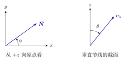
把三个角速度贡献分别投影到体轴 \(x_1x_2x_3\) 上。\(\dot\phi\) 沿固定 \(z\) 轴，而固定 \(z\) 轴在体轴中的方向是 \(R^{\mathsf T}\hat{\mathbf z}\)，即 \[(\sin\theta\sin\psi,\ \sin\theta\cos\psi,\ \cos\theta),\] 故 \(\dot\phi\) 的贡献为 \[\dot\phi(\sin\theta\sin\psi,\ \sin\theta\cos\psi,\ \cos\theta).\] \(\dot\theta\) 沿节线，节线在体轴中的方向是 \(R^{\mathsf T}\hat{\mathbf N}\)，即 \[(\cos\psi,\ -\sin\psi,\ 0),\] 故 \(\dot\theta\) 的贡献为 \[\dot\theta(\cos\psi,\ -\sin\psi,\ 0).\] \(\dot\psi\) 沿体轴 \(x_3\)，贡献为 \((0,0,\dot\psi)\)。三者在无限小转动意义下相加，得到角速度分量 \[\omega_1=\dot\phi\sin\theta\sin\psi+\dot\theta\cos\psi, \tag{5.6}\] \[\omega_2=\dot\phi\sin\theta\cos\psi-\dot\theta\sin\psi, \tag{5.7}\] \[\omega_3=\dot\phi\cos\theta+\dot\psi. \tag{5.8}\] 这三个式子看起来复杂，但含义清楚：\(\dot\phi\) 通过章动角 \(\theta\) 分解到刚体轴上，\(\dot\theta\) 沿节线方向，\(\dot\psi\) 沿刚体自身的 \(z'\) 轴。它们是把欧拉角动力学与欧拉方程连接起来的关键。
若只关心角速度的大小，可以利用 \[\omega^2=\dot\theta^2+\dot\phi^2\sin^2\theta +(\dot\psi+\dot\phi\cos\theta)^2.\] 这是对称陀螺动能计算的起点。
5.1.5刚体上各点的速度与加速度
将刚体运动分解为基点的平动和绕基点的转动，是处理刚体运动学最常用的方法。取质心 \(C\) 为基点： \[\mathbf{v}_P=\mathbf{v}_C+\mathbf{\omega}\times(\mathbf{r}_P-\mathbf{r}_C), \tag{5.9}\] \[\mathbf{a}_P=\mathbf{a}_C+\mathbf\alpha\times(\mathbf{r}_P-\mathbf{r}_C) +\mathbf{\omega}\times\bigl[\mathbf{\omega}\times(\mathbf{r}_P-\mathbf{r}_C)\bigr]. \tag{5.10}\] 若刚体做平面平行运动，取平面为 \(xy\) 平面，则 \(\mathbf{\omega}=\omega\hat{\mathbf k}\)，且 \[\mathbf{v}_P=\mathbf{v}_C+\omega\hat{\mathbf k}\times(\mathbf{r}_P-\mathbf{r}_C).\] 当平面运动的 \(\omega\ne0\) 时，可找到瞬时速度为零的位置；纯平动没有有限瞬心。瞬心只是一时刻的速度表示，不能将它自动当作固定支点来写加速度或力矩方程。后文滚动将检验这一差别。
5.2刚体的惯量张量
5.2.1角动量与惯量张量
设刚体绕固定点 \(O\) 转动，角速度为 \(\mathbf{\omega}\)。第 \(i\) 个质点的速度为 \[\mathbf{v}_i=\mathbf{\omega}\times\mathbf{r}_i.\] 刚体对 \(O\) 点的角动量为 \[\mathbf{J}_O=\sum_i m_i\mathbf{r}_i\times\mathbf{v}_i =\sum_i m_i\mathbf{r}_i\times(\mathbf{\omega}\times\mathbf{r}_i). \tag{5.11}\] 利用矢量恒等式 \[\mathbf{A}\times(\mathbf{B}\times\mathbf{C}) =\mathbf{B}(\mathbf{A}\cdot\mathbf{C})-\mathbf{C}(\mathbf{A}\cdot\mathbf{B}),\] 得到 \[\mathbf{J}_O=\sum_i m_i\left[r_i^2\mathbf{\omega}-\mathbf{r}_i(\mathbf{r}_i\cdot\mathbf{\omega})\right]. \tag{5.12}\] 把 \(\mathbf{\omega}\) 提出，定义 \[\mathbf{I}_O=\sum_i m_i\left(r_i^2\mathbf 1-\mathbf{r}_i\mathbf{r}_i^{\mathsf T}\right), \tag{5.13}\] 其中 \(\mathbf 1\) 是 \(3\times3\) 单位矩阵。把 \(\mathbf{I}_O\) 称为刚体对 \(O\) 点的惯量张量，则 \[\boxed{\mathbf{J}_O=\mathbf{I}_O\mathbf{\omega}.} \tag{5.14}\] 对连续体， \[\mathbf{I}_O=\int \rho(\mathbf{r})\left(r^2\mathbf 1-\mathbf{r}\mathbf{r}^{\mathsf T}\right)\mathrm{d}V. \tag{5.15}\]
在直角坐标中，惯量张量的分量为 \[I_{xx}=\int\rho(y^2+z^2)\mathrm{d}V,\qquad I_{yy}=\int\rho(x^2+z^2)\mathrm{d}V,\qquad I_{zz}=\int\rho(x^2+y^2)\mathrm{d}V, \tag{5.16}\] \[I_{xy}=I_{yx}=-\int\rho xy\mathrm{d}V,\qquad I_{xz}=I_{zx}=-\int\rho xz\mathrm{d}V,\qquad I_{yz}=I_{zy}=-\int\rho yz\mathrm{d}V. \tag{5.17}\] 对角元称为转动惯量，非对角元是本书采用负号约定的惯量积。有些书把 \(\int xy\,\mathrm{d}m\) 本身称为惯量积，使用公式前须核对负号。惯量张量是实对称矩阵： \[I_{ab}=I_{ba}.\]
这里必须强调一个容易误解的地方：
角动量 \(\mathbf{J}_O\) 一般不平行于角速度 \(\mathbf{\omega}\)。只有当 \(\mathbf{\omega}\) 沿惯量主轴时，二者才平行。惯量张量正是把“转动惯量”从单个标量推广为线性映射的数学对象。
例如均匀细杆被机构强迫绕非主轴转动时，角动量通常不沿角速度，即使转轴固定也可能需要横向力矩。反过来，无外力矩时角动量方向固定，角速度仍可变化；后文将分别讨论这两个问题。
5.2.2惯量张量的性质
惯量张量有几个基本性质：
对称性：\(I_{ab}=I_{ba}\)，因此总可以正交对角化。
半正定性：对任意 \(\mathbf{\omega}\)， \[\mathbf{\omega}^{\mathsf T}\mathbf{I}\mathbf{\omega} =\sum_i m_i|\mathbf{\omega}\times\mathbf{r}_i|^2\ge 0.\] 等号成立当且仅当所有质量都位于转轴上。对真正有三维体积的刚体，等号不成立，惯量张量正定；对质量全在某条过参考点直线上的理想模型，该轴惯量为零。非退化薄板的质量不共线，三个主惯量仍都为正。
与原点有关：同一刚体对不同参考点的惯量张量不同，需用平行轴定理换算。
与坐标系取向有关：矩阵分量随坐标转动而变，但本征值不变。
刚体的转动动能也可以写成二次型： \[T_{\rm rot} =\frac12\sum_i m_i v_i^2 =\frac12\sum_i m_i(\mathbf{\omega}\times\mathbf{r}_i)\cdot(\mathbf{\omega}\times\mathbf{r}_i) =\frac12\mathbf{\omega}^{\mathsf T}\mathbf{I}_O\mathbf{\omega}. \tag{5.18}\] 这一步说明了惯量张量的物理意义：它是转动动能和角动量中的“质量矩阵”。
平动惯性的度量是质量 \(m\)，转动惯性的度量是惯量张量 \(\mathbf{I}\)。质量是标量，惯量张量是二阶张量；这意味着刚体对不同方向的转动“阻力”不同。把一个物体绕长轴和绕短轴旋转，感受到的惯性可以完全不同。
5.2.3坐标变换与惯量的物理可实现性
令 \(R\) 把体分量变到空间分量，同一个参考点的张量满足 \[\mathbf{I}_S=R\mathbf{I}_bR^{\mathsf T},\qquad \mathbf{J}_S=R\mathbf{J}_b,\qquad \mathbf{\omega}_S=R\mathbf{\omega}_b. \tag{5.19}\] 这是由 \(\mathbf{J}_b=\mathbf{I}_b\mathbf{\omega}_b\) 两边左乘 \(R\) 得到的，不同参考点还须另用平行轴定理。在体轴中惯量常数，在空间轴中通常随姿态变化。
主惯量除非负外还满足三角不等式。例如主轴坐标下 \[I_1+I_2-I_3=2\int x_3^2\,\mathrm{d}m\ge0,\] 其余循环置换。故任意三个正数不一定都能作为某个质量分布的主惯量；薄板位于 \(x_3=0\) 时恰有 \(I_3=I_1+I_2\)，并不意味着某个主惯量为零。
例 1.1 (带惯量积的三质点刚架). 三个质量均为 \(m\) 的质点，用无质量刚杆固定在 \[(a,0,0),\quad(0,a,0),\quad(-a,-a,0).\] 质心为原点。逐点求和得 \[\mathbf{I}_C=ma^2\begin{pmatrix}2&-1&0\\-1&2&0\\0&0&4\end{pmatrix}.\] 例如 \(I_{xy}=-m[0+0+a^2]=-ma^2\)，\(I_{xx}=m(0+a^2+a^2)\)。主轴为 \[\mathbf{e}_1=(1,1,0)/\sqrt2,\quad\mathbf{e}_2=(-1,1,0)/\sqrt2,\quad\mathbf{e}_3=(0,0,1),\] 对应 \(I_1=ma^2,I_2=3ma^2,I_3=4ma^2\)。它们满足薄板等式，且全部为正。若瞬时 \(\mathbf{\omega}=\Omega(1,0,0)\)，则 \[\mathbf{J}=ma^2\Omega(2,-1,0),\qquad T=ma^2\Omega^2,\] 直接显示角动量偏离角速度。用主轴投影计算同一动能，结果不变。
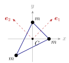
5.2.4平行轴定理与垂直轴定理
设 \(C\) 为质心，刚体对质心的惯量张量为 \(\mathbf{I}_C\)。对任意点 \(O\)，设 \[\mathbf{r}_i=\mathbf{R}_C+\mathbf\rho_i, \qquad \sum_i m_i\mathbf\rho_i=0.\] 代入式 (5.13)，含 \(\mathbf\rho_i\) 一次的交叉项为 \[\sum_i m_i\left[ 2(\mathbf{R}_C\cdot\mathbf\rho_i)\mathbf 1 -\mathbf{R}_C\mathbf\rho_i^{\mathsf T} -\mathbf\rho_i\mathbf{R}_C^{\mathsf T}\right],\] 它因 \(\sum_i m_i\mathbf\rho_i=0\) 而消失，于是得到 \[\boxed{ \mathbf{I}_O=\mathbf{I}_C+M\left(R_C^2\mathbf 1-\mathbf{R}_C\mathbf{R}_C^{\mathsf T}\right). } \tag{5.20}\] 其中 \(M\) 为刚体总质量，\(\mathbf{R}_C\) 是质心相对 \(O\) 的位矢。
若转轴方向为单位矢量 \(\hat{\mathbf{e}}\)，则绕该轴的标量转动惯量为 \[I_O(\hat{\mathbf{e}})=I_C(\hat{\mathbf{e}})+M d_\perp^2, \tag{5.21}\] 其中 \(d_\perp\) 是质心到转轴的垂直距离。这就是通常的平行轴定理。
对薄板，取板面为 \(xy\) 平面，则 \(z=0\)，有 \[I_z=I_x+I_y. \tag{5.22}\] 这是垂直轴定理，只适用于薄板。
5.2.5惯量主轴与惯量椭球
由实对称矩阵的谱定理，实对称矩阵 \(\mathbf{I}\) 必可正交对角化。对三维刚体，\(\mathbf{I}\) 还是正定的；对过参考点的共线质点模型可有零主惯量，非退化薄板没有这一退化。因此存在三个相互正交的单位矢量 \[\hat{\mathbf{e}}_1,\hat{\mathbf{e}}_2,\hat{\mathbf{e}}_3\] 和三个非负实数 \(I_1,I_2,I_3\)，使得 \[\mathbf{I}\hat{\mathbf{e}}_a=I_a\hat{\mathbf{e}}_a. \tag{5.23}\] 这三个方向称为惯量主轴，\(I_a\) 称为主转动惯量。在以主轴为坐标轴的坐标系中， \[\mathbf{I}=\operatorname{diag}(I_1,I_2,I_3). \tag{5.24}\] 这些对称性推论都要求惯量参考点位于相应对称面或对称轴上：对称面法线是主轴，至少二重的旋转对称轴是主轴；高于二重的旋转对称轴还使两个横向主惯量相等。
对任意方向 \(\hat{\mathbf{e}}\)，绕该轴的转动惯量为 \[I(\hat{\mathbf{e}})=\hat{\mathbf{e}}^{\mathsf T}\mathbf{I}\hat{\mathbf{e}}. \tag{5.25}\] 若在方向 \(\hat{\mathbf{e}}\) 上取长度 \[r=\frac{1}{\sqrt{I(\hat{\mathbf{e}})}},\] 则所有这样的点构成惯量椭球： \[\mathbf{r}^{\mathsf T}\mathbf{I}\mathbf{r}=1. \tag{5.26}\] 在主轴坐标系中，它写成 \[I_1x^2+I_2y^2+I_3z^2=1. \tag{5.27}\] 当三个主转动惯量都非零时，三个半轴长度分别为 \[\frac{1}{\sqrt{I_1}},\qquad \frac{1}{\sqrt{I_2}},\qquad \frac{1}{\sqrt{I_3}}.\] 主轴方向就是椭球的三个主轴方向。转动惯量最大的方向对应椭球最短的半轴，转动惯量最小的方向对应最长的半轴。若某个主转动惯量为零，惯量椭球退化为柱面等退化二次曲面；这时“椭球”应作广义理解。
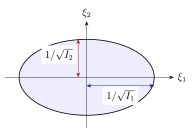
注 1.2. 惯量主轴不一定唯一。若两个主转动惯量相等（例如对称陀螺），则垂直于对称轴的任意两个正交方向都可以选为另外两个主轴；若三个主转动惯量都相等（例如均匀球体），则任意正交三轴都是主轴。这种简并来自对称性，不影响物理结果。
5.2.6典型刚体的转动惯量
下表列出几种常见均匀刚体对质心主轴（或特别注明的固定轴）的转动惯量。表中 \(M\) 为质量，\(R\) 为半径，\(L\) 为长度，\(a,b\) 为矩形边长；薄圆盘可看作 \(L=0\) 的圆柱。
| 刚体 | 转轴 | 转动惯量 |
|---|---|---|
| 细杆 | 过质心且垂直杆 | \(\dfrac{1}{12}ML^2\) |
| 细杆 | 过一端且垂直杆（固定轴） | \(\dfrac{1}{3}ML^2\) |
| 圆盘或圆柱 | 对称轴 | \(\dfrac{1}{2}MR^2\) |
| 圆柱（长 \(L\)） | 过质心且垂直对称轴 | \(\dfrac{1}{4}MR^2+\dfrac{1}{12}ML^2\) |
| 圆环 | 对称轴 | \(MR^2\) |
| 实心球 | 任一直径 | \(\dfrac{2}{5}MR^2\) |
| 薄球壳 | 任一直径 | \(\dfrac{2}{3}MR^2\) |
| 矩形薄板 | 过质心且平行边 \(a\) | \(\dfrac{1}{12}Mb^2\) |
例 1.2 (矩形薄板绕对角线转动). 质量为 \(M\)、边长为 \(a,b\) 的均匀矩形薄板，求绕其对角线转动的转动惯量。
取质心为原点，\(x\) 轴平行于边 \(a\)，\(y\) 轴平行于边 \(b\)。面密度为 \(M/(ab)\)，例如 \[I_{xx}=\frac{M}{ab}\int_{-a/2}^{a/2}\mathrm{d}x\int_{-b/2}^{b/2}y^2\,\mathrm{d}y=\frac{Mb^2}{12}.\] 另一对角元交换 \(a,b\)；\(xy\) 项关于任一坐标为奇函数，积分为零。因此 \[I_{xx}=\frac{1}{12}Mb^2,\qquad I_{yy}=\frac{1}{12}Ma^2,\qquad I_{xy}=0.\] 对角线方向单位矢量为 \[\hat{\mathbf{e}}=\frac{1}{\sqrt{a^2+b^2}}(a,b,0).\] 于是 \[I_{\rm diag} =I_{xx}\cos^2\alpha+I_{yy}\sin^2\alpha,\] 其中 \[\cos\alpha=\frac{a}{\sqrt{a^2+b^2}}, \qquad \sin\alpha=\frac{b}{\sqrt{a^2+b^2}}.\] 代入得 \[I_{\rm diag} =\frac{1}{12}Mb^2\frac{a^2}{a^2+b^2} +\frac{1}{12}Ma^2\frac{b^2}{a^2+b^2} =\frac{Ma^2b^2}{6(a^2+b^2)}.\] 当 \(a=b\) 时，\(I_{\rm diag}=Ma^2/12\)，与正方形绕任意过质心的面内轴相同，这是正方形对称性的结果。
主轴是关于指定参考点的惯性方向，不是凭物体外形随便指定的“长轴”。物体改变内部形状时，惯量也会改变，但它已超出单一刚体的固定惯量模型；应将各刚体部件与内部关节另行建模。
5.3力系简化与刚体平衡
5.3.1力系的简化
刚体不变形，因此作用在刚体上的力可以沿作用线滑动而不改变外效应。对力系进行简化时，所有力可以向任意一点 \(O\) 平移，但每平移一个力 \(\mathbf{F}_i\) 都要附加一个力偶 \[\mathbf{M}_i=(\mathbf{r}_i-\mathbf{r}_O)\times\mathbf{F}_i.\] 于是任意力系等效为 \[\mathbf{F}=\sum_i\mathbf{F}_i, \qquad \mathbf{M}_O=\sum_i(\mathbf{r}_i-\mathbf{r}_O)\times\mathbf{F}_i.\] 这就是力系向一点简化的结果：一个合力加一个合力偶。
若 \(\mathbf{F}\ne0\)，把合力放在相对 \(O\) 的位置 \(\mathbf{a}=(\mathbf{F}\times\mathbf{M}_O)/F^2\)，则 \(\mathbf{a}\times\mathbf{F}\) 正好重现垂直于 \(\mathbf{F}\) 的力矩，剩下平行力偶 \((\mathbf{F}\cdot\mathbf{M}_O)\mathbf{F}/F^2\)。因此 \(\mathbf{F}\cdot\mathbf{M}_O=0\) 时可用单个合力替代，否则为力螺旋。若 \(\mathbf{F}=0\)，只剩纯力偶或零力系。这个等效针对刚体的整体动力学，不保证局部应力相同。
5.3.2刚体平衡方程
这里讨论静止平衡：质心速度和角速度都为零，质心加速度和角加速度也为零。给定非零初速度的运动问题不能只靠这两个代数条件判断，尤其非主轴恒速转动可能需要力矩。由动量定理和角动量定理， \[\boxed{ \sum_i\mathbf{F}_i=0,\qquad \sum_i\mathbf{M}_O^{(i)}=0. } \tag{5.28}\] 这两式配合静止初态给出平衡的必要动力学条件；还须满足约束几何和单侧反力、静摩擦可行性。它们本身不把任意已有运动自动停止，也不保证平衡稳定。第二式对任意点 \(O\) 都成立；若对某一点成立，则对另一点也成立（在合力为零的前提下）。
在平面问题中，平衡方程通常写成三个标量方程： \[\sum F_x=0,\qquad \sum F_y=0,\qquad \sum M_O=0.\] 这三个方程最多能确定三个未知约束力。如果未知力多于独立方程，系统就是静不定的，需要引入变形协调条件；刚体模型本身无法给出唯一解。
5.3.3例题：梯子的平衡
例 1.3 (斜靠在墙上的梯子). 长度为 \(2L\)、质量为 \(M\) 的均匀梯子斜靠在光滑竖直墙上，下端放在粗糙水平地面上，与地面夹角为 \(\theta\)。求梯子不滑倒所需的最小静摩擦因数。
设墙面对梯子的法向力为 \(N_w\)，地面对梯子的法向力为 \(N_f\)，静摩擦力为 \(f\)。平衡方程为 \[N_w=f,\qquad N_f=Mg.\] 对梯子与地面的接触点取力矩： \[N_w(2L\sin\theta)-Mg(L\cos\theta)=0.\] 因此 \[N_w=\frac{Mg}{2}\cot\theta.\] 不滑倒条件为 \[f=N_w\le \mu N_f=\mu Mg.\] 代入得 \[\frac12\cot\theta\le\mu,\] 即 \[\tan\theta\ge\frac{1}{2\mu}.\] 当 \(\theta\) 太小时，梯子越接近水平，墙面对梯子的法向力越大，需要的摩擦力也越大，因此越容易滑倒。
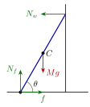
这个例题展示了刚体平衡问题的标准步骤：画受力图、写合力方程、写力矩方程、用约束条件（这里是摩擦力上限）判断可行性。注意力矩方程可以取任意点，取在未知力最多的点通常最方便。
仅在水平支承、单侧法向接触、重力主导且无额外力偶的静力模型中，质心竖直投影落在支撑区域内才给出抗倾覆条件；还要检查不滑动。侧向外力、加速、抓取或主动驱动会改变条件，不能用一个支撑多边形判据包办所有刚体平衡。
5.4刚体动力学基本定理
5.4.1动量与角动量
令 \(\mathbf{r}_i=\mathbf{r}_C+\mathbf\rho_i\)，其中 \(\sum_i m_i\mathbf\rho_i=0\)。刚体的总动量为 \[\mathbf{P}=\sum_i m_i\mathbf{v}_i =\sum_i m_i(\mathbf{v}_C+\mathbf{\omega}\times\mathbf\rho_i) =M\mathbf{v}_C+\mathbf{\omega}\times\sum_i m_i\mathbf\rho_i =M\mathbf{v}_C,\] 即 \[\mathbf{P}=M\mathbf{v}_C, \tag{5.29}\] 其中 \(M\) 为总质量，\(\mathbf{v}_C\) 为质心速度。由质点系动量定理，质心运动方程为 \[M\mathbf{a}_C=\sum_i\mathbf{F}_i^{\rm ext}. \tag{5.30}\] 这说明刚体的平动部分与一个质量为 \(M\) 的质点完全相同，内部力不影响质心运动。
利用同一分解，速度写成 \(\mathbf{v}_i=\mathbf{v}_C+\mathbf{\omega}\times\mathbf\rho_i\)。代入角动量定义： \[\mathbf{J}_O=\sum_i m_i(\mathbf{r}_C+\mathbf\rho_i)\times(\mathbf{v}_C+\mathbf{\omega}\times\mathbf\rho_i).\] 展开后，含 \(\mathbf\rho_i\) 的一次项因 \(\sum_i m_i\mathbf\rho_i=0\) 而消失，剩下 \[\mathbf{J}_O=\mathbf{r}_C\times(M\mathbf{v}_C) +\sum_i m_i\mathbf\rho_i\times(\mathbf{\omega}\times\mathbf\rho_i) =\mathbf{r}_C\times\mathbf{P}+\mathbf{J}_C.\] 因此刚体对固定点 \(O\) 的角动量为 \[\mathbf{J}_O=\mathbf{J}_C+\mathbf{r}_C\times\mathbf{P}, \tag{5.31}\] 其中 \(\mathbf{J}_C=\mathbf{I}_C\mathbf{\omega}\) 是绕质心的自转角动量。由质点系角动量定理，对固定点 \(O\)， \[\dot\mathbf{J}_O=\mathbf{M}_O^{\rm ext}. \tag{5.32}\] 同样由质点系角动量定理，对质心 \(C\)， \[\dot\mathbf{J}_C=\mathbf{M}_C^{\rm ext}. \tag{5.33}\] 第二式特别重要：即使质心有加速度，只要取质心为矩心，角动量定理仍然保持简单形式。这就是为什么刚体动力学通常把运动分解为“质心平动 + 绕质心转动”。
5.4.2移动矩心：先说明角动量的定义
取惯性系中的任意移动点 \(A\)，令 \(\rho_i=\mathbf{r}_i-\mathbf{r}_A\)。若角动量用质点的绝对速度定义， \[{\mathbf H}_A=\sum_i\rho_i\times m_i\mathbf{v}_i,\] 逐项微分得 \[\dot{\mathbf H}_A=\sum_i(\mathbf{v}_i-\mathbf{v}_A)\times m_i\mathbf{v}_i +\sum_i\rho_i\times\mathbf{F}_i =\mathbf{M}_A^{\rm ext}-\mathbf{v}_A\times\mathbf{P}.\] 其中已用内部中心力矩相消，或将刚体内力视为理想约束。若改用相对速度，定义 \[{\mathbf K}_A=\sum_i\rho_i\times m_i(\mathbf{v}_i-\mathbf{v}_A),\] 则第一项的同矢量叉积为零，得到 \[\dot{\mathbf K}_A=\mathbf{M}_A^{\rm ext}-M\rho_C\times\mathbf{a}_A, \quad \rho_C=\mathbf{r}_C-\mathbf{r}_A. \tag{5.34}\] \({\mathbf H}_A\) 与 \({\mathbf K}_A\) 不可混称；二者相差 \(M\rho_C\times\mathbf{v}_A\)。若 \(A\) 固连于刚体，\({\mathbf K}_A=\mathbf{I}_A\mathbf{\omega}\)，故一般还要保留参考点加速度项。取 \(A=C\) 时 \(\rho_C=0\)；取固定点时 \(\mathbf{v}_A=\mathbf{a}_A=0\)，两种定义都恢复简单角动量定理。这是选质心或固定支点的理由。
例 1.4 (瞬时静止的接触点不是固定支点). 圆轮在静止水平面上向右匀速无滑动滚动，半径 \(R\)，速度 \(v\)，角速度矢量为 \(-(v/R)\hat z\)。当前接触的物质点 \(P\) 有 \(\mathbf{v}_P=0\)，但 \[\mathbf{a}_P=\mathbf{\omega}\times[\mathbf{\omega}\times(-R\hat y)] =\frac{v^2}{R}\hat y\ne0.\] 下一瞬间接触地面的是另一个物质点。当前轮的动能确可写成 \(I_P\omega^2/2\)，却不能据此把 \(P\) 当作一段时间内固定的转轴。若用随轮的这个物质点作矩心，应检验式 (5.34)；本例修正力矩恰因 \(\rho_C\parallel\mathbf{a}_P\) 为零，但其加速度仍不为零。
5.4.3动能与功
把 \(\mathbf{v}_i=\mathbf{v}_C+\mathbf{\omega}\times\mathbf\rho_i\) 代入动能定义： \[T=\frac12\sum_i m_i|\mathbf{v}_C+\mathbf{\omega}\times\mathbf\rho_i|^2.\] 展开后的交叉项为 \[\mathbf{v}_C\cdot\left(\mathbf{\omega}\times\sum_i m_i\mathbf\rho_i\right)=0,\] 于是只剩两项： \[T=\frac12Mv_C^2 +\frac12\sum_i m_i|\mathbf{\omega}\times\mathbf\rho_i|^2 =\frac12Mv_C^2+\frac12\mathbf{\omega}^{\mathsf T}\mathbf{I}_C\mathbf{\omega}.\] 因此刚体的动能可以分解为质心平动动能和绕质心转动动能： \[\boxed{ T=\frac12Mv_C^2+\frac12\mathbf{\omega}^{\mathsf T}\mathbf{I}_C\mathbf{\omega}. } \tag{5.35}\] 这就是刚体版的柯尼希定理。若刚体绕固定点 \(O\) 转动，则 \[T=\frac12\mathbf{\omega}^{\mathsf T}\mathbf{I}_O\mathbf{\omega}. \tag{5.36}\] 若刚体做定轴转动，\(\mathbf{\omega}=\omega\hat{\mathbf{e}}\)，则 \[T=\frac12 I\omega^2.\]
对无限小转动 \(\mathrm{d}\mathbf{\theta}\)，刚体上一点 \(\mathbf{r}_i=\mathbf{r}_C+\mathbf\rho_i\) 的位移为 \[\mathrm{d}\mathbf{r}_i=\mathrm{d}\mathbf{r}_C+\mathrm{d}\mathbf{\theta}\times\mathbf\rho_i.\] 因此外力做的元功为 \[\mathrm{d}W=\sum_i\mathbf{F}_i\cdot\mathrm{d}\mathbf{r}_i =\mathbf{F}\cdot\mathrm{d}\mathbf{r}_C +\mathrm{d}\mathbf{\theta}\cdot\sum_i\mathbf\rho_i\times\mathbf{F}_i =\mathbf{F}\cdot\mathrm{d}\mathbf{r}_C+\mathbf{M}_C\cdot\mathrm{d}\mathbf{\theta}.\] 写成方程即 \[\mathrm{d}W=\sum_i\mathbf{F}_i\cdot\mathrm{d}\mathbf{r}_i =\mathbf{F}\cdot\mathrm{d}\mathbf{r}_C+\mathbf{M}_C\cdot\mathrm{d}\mathbf{\theta}. \tag{5.37}\] 因此功率为 \[P=\mathbf{F}\cdot\mathbf{v}_C+\mathbf{M}_C\cdot\mathbf{\omega}. \tag{5.38}\] 对保守力系，机械能守恒： \[T+V=E.\]
5.4.4定轴转动与复摆
设刚体绕固定轴 \(z\) 转动，转动惯量为 \(I\)。取角动量定理的 \(z\) 分量；理想固定轴的反力对 \(z\) 轴没有力矩，因此只有外力矩进入方程： \[I\ddot\theta=M_z, \tag{5.39}\] 其中 \(M_z\) 是外力对转轴的力矩。若只有重力做功，则能量积分为 \[\frac12I\dot\theta^2+V(\theta)=E.\]
例 1.5 (复摆). 刚体绕通过 \(O\) 点的水平固定轴摆动，质心到轴的距离为 \(l\)，总质量为 \(m\)，绕轴转动惯量为 \(I_O\)。求小摆动的周期。
设摆角为 \(\theta\)，重力矩为 \[M_z=-mgl\sin\theta.\] 运动方程为 \[I_O\ddot\theta=-mgl\sin\theta.\] 小角度下 \(\sin\theta\approx\theta\)，得 \[\ddot\theta+\frac{mgl}{I_O}\theta=0.\] 因此 \[\omega_0=\sqrt{\frac{mgl}{I_O}}, \qquad T=2\pi\sqrt{\frac{I_O}{mgl}}.\] 对长为 \(L\) 的均匀细杆绕一端摆动， \[I_O=\frac13ML^2,\qquad l=\frac L2,\] 所以 \[T=2\pi\sqrt{\frac{2L}{3g}}.\] 这比同样长度的单摆周期短，因为杆的质量分布更靠近转轴。
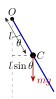
5.4.5平面平行运动
刚体做平面平行运动时，取质心 \(C\) 为基点。由质心运动方程和绕质心的角动量定理，得到 \[M\ddot x_C=F_x,\qquad M\ddot y_C=F_y,\qquad I_C\ddot\theta=M_C, \tag{5.40}\] 其中 \(F_x,F_y\) 是外力在平面内的分量，\(M_C\) 是外力对过质心且垂直于运动平面的轴的合力矩。 动能写成 \[T=\frac12Mv_C^2+\frac12I_C\omega^2. \tag{5.41}\] 若刚体在静止曲面上无滑动滚动，当前接触的物质点速度为零，这就是滚动约束；曲面运动时应要求双方接触点的相对速度为零。
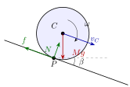
例 1.6 (圆柱沿斜面滚下). 质量为 \(M\)、半径为 \(R\)、绕质心转动惯量为 \(I_C\) 的圆柱，沿倾角为 \(\beta\) 的斜面做无滑动滚动。求质心加速度。
取沿斜面向下为质心加速度的正方向，摩擦力 \(f\) 沿斜面向上，并取与该滚动方向相应的角加速度为正。沿斜面方向： \[Mg\sin\beta-f=Ma.\] 绕质心取相应的正方向： \[fR=I_C\alpha.\] 无滑动条件为 \[a=R\alpha.\] 由后两式得 \[f=\frac{I_C}{R^2}a.\] 代入第一式： \[Mg\sin\beta-\frac{I_C}{R^2}a=Ma,\] 所以 \[a=\frac{g\sin\beta}{1+I_C/(MR^2)}.\] 对实心圆柱 \(I_C=\frac12MR^2\)，得 \[a=\frac23g\sin\beta.\] 对实心球 \(I_C=\frac25MR^2\)，得 \[a=\frac57g\sin\beta.\] 对薄圆环 \(I_C=MR^2\)，得 \[a=\frac12g\sin\beta.\] 转动惯量越大，越来越多的重力势能转化为转动动能，质心平动加速度越小。
由 \(N=Mg\cos\beta\) 及上述方程，还应检查 \[f=\frac{\kappa}{1+\kappa}Mg\sin\beta,\qquad \mu_s\ge\frac{\kappa}{1+\kappa}\tan\beta,\quad \kappa=\frac{I_C}{MR^2}.\] 实心圆柱要求 \(\mu_s\ge\tan\beta/3\)。若不足，应改用滑动摩擦模型，而不是继续强加 \(a=R\alpha\)。静止斜面上的理想静摩擦总功率为 \(\mathbf{F}_f\cdot\mathbf{v}_P=0\)；它对质心平动的功率 \(-fv_C\) 与对转动的功率 \(fR\omega\) 抵消。故摩擦传递两种动能，却不在该模型中耗散机械能。
例 1.7 (台球击球点). 质量为 \(M\)、半径为 \(R\) 的均匀实心球静止在水平桌面上。用水平冲量在距球心高度 \(h\) 处击球，求击后瞬间质心速度与角速度，并判断球会先滑动还是直接滚动。
击球瞬间摩擦冲量可忽略。用 \(\mathcal J\) 表示击球冲量。由动量定理和角动量定理， \[Mv_0=\mathcal J,\qquad I_C\omega_0=\mathcal J h.\] 这里取球向右运动，并把顺时针方向的角速度取为正值。因此 \[v_0=\frac{\mathcal J}{M},\qquad \omega_0=\frac{\mathcal J h}{I_C}.\] 球与桌面的接触点速度为 \[v_P=v_0-R\omega_0 =\mathcal J\left(\frac1M-\frac{Rh}{I_C}\right).\] 对实心球 \(I_C=\frac25MR^2\)，有 \[v_P=\frac{\mathcal J}{M}\left(1-\frac{5h}{2R}\right).\] 当 \(h=\frac25R\) 时，\(v_P=0\)，球击后立即无滑动滚动；当 \(h>\frac25R\) 时，\(v_P<0\)，接触点向后滑，摩擦向前，球会加速；当 \(h<\frac25R\) 时，接触点向前滑，摩擦向后，球会减速。这里的判据依赖均匀实心球、水平冲量、击球期间桌面切向冲量可忽略等假设，不能直接套用于有壳、变形或复杂接触的其他球体。
例 1.8 (击后滑动怎样过渡到滚动). 沿用台球例题的顺时针标量角速度，记 \(I_C=\kappa MR^2\)、\(u_0=v_0-R\omega_0\)。击球结束后，假设桌面动摩擦因数 \(\mu_k>0\)、法向力 \(Mg\)，且没有其他水平力或滚阻。滑动阶段 \[\dot v=-\mu_kg\,\operatorname{sgn}u,\qquad R\dot\omega=\frac{\mu_kg}{\kappa}\operatorname{sgn}u, \quad \dot u=-\mu_kg(1+1/\kappa)\operatorname{sgn}u.\] 因此达到 \(u=0\) 的时间和末速度为 \[t_r=\frac{|u_0|}{\mu_kg(1+1/\kappa)},\qquad v_r=\frac{v_0+\kappa R\omega_0}{1+\kappa},\quad \omega_r=v_r/R.\] 摩擦的总功率为 \(-\mu_kMg|u|\)，能量损失 \[T_0-T_r=\frac12\frac{\kappa M}{1+\kappa}u_0^2.\] 实心球 \(\kappa=2/5\) 时 \(v_r=(5v_0+2R\omega_0)/7\)。中心击球 \(\omega_0=0\) 给 \(v_r=5v_0/7\)；在 \(h=2R/5\) 处击球则 \(u_0=0\)、无这一滑动损失。进入滚动后，本理想模型无需维持非零摩擦；实际滚阻属于另加效应。
5.4.6非主轴转动：轴承为何承受动态负载？
例 1.9 (角速度与角动量不平行的直接后果). 均匀细杆质量 \(m\)、长度 \(l\)，质心固定，杆方向为单位矢量 \(\mathbf{u}\)。理想细杆惯量张量为 \[\mathbf{I}=I_\perp(\mathbf1-\mathbf{u}\mathbf{u}^{\mathsf T}),\qquad I_\perp=ml^2/12.\] 令外部机构迫使杆绕固定 \(z\) 轴以恒定角速度 \(\mathbf{\omega}=\Omega\hat{\mathbf z}\) 转动，并保持夹角 \(0<\alpha<\pi/2\)。于是 \[\mathbf{J}=I_\perp\Omega(\hat{\mathbf z}-\cos\alpha\,\mathbf{u}), \qquad \dot\mathbf{u}=\Omega\hat{\mathbf z}\times\mathbf{u}.\] 对空间角动量求导，得保持这种运动所需的外力矩 \[\mathbf{M}=-I_\perp\Omega^2\cos\alpha\, \hat{\mathbf z}\times\mathbf{u}, \qquad |\mathbf{M}|=I_\perp\Omega^2\sin\alpha\cos\alpha.\] 虽然 \(\dot\Omega=0\)，外力矩仍不为零，因为角动量方向在改变。\(\alpha=\pi/2\) 时固定轴是主轴，动态力矩消失；\(\alpha=0\) 时理想细杆绕自身轴惯量为零，这个退化极限不能代表真实转子的纵向惯量。力矩与角速度正交，故功率 \(\mathbf{M}\cdot\mathbf{\omega}=0\)，与转动动能恒定相容。
5.5欧拉方程与自由刚体
5.5.1欧拉方程
写欧拉方程前，先推导体轴的输运公式。设 \(\mathbf{e}_i(t)\) 是固连基矢，任意矢量写为 \[\mathbf{A}=\sum_i A_i(t)\mathbf{e}_i(t).\] 由 \(\dot\mathbf{e}_i=\mathbf{\omega}\times\mathbf{e}_i\)，乘积法则给出 \[\left(\frac{\mathrm{d}\mathbf{A}}{\mathrm{d}t}\right)_S =\sum_i\dot A_i\mathbf{e}_i+\sum_i A_i\dot\mathbf{e}_i =\left(\frac{\mathrm{d}\mathbf{A}}{\mathrm{d}t}\right)_b+\mathbf{\omega}\times\mathbf{A}. \tag{5.42}\] 下标 \(b\) 表示仅微分体轴分量；它不是另一根独立的物理矢量。取 \(\mathbf{A}=\mathbf{\omega}\) 时叉积为零，故角加速度的体轴分量恰为 \(\dot\omega_i\)；对角动量则一般不能删去叉积。
无力矩时 \(\mathbf{J}\) 在空间固定，但体轴随刚体转动，其体轴分量可以改变。不同主惯量又使 \(\mathbf{\omega}=\mathbf{I}^{-1}\mathbf{J}\) 通常不沿 \(\mathbf{J}\)。跟踪空间角动量、体轴方向和角速度三个对象，才能解释自由转动，不能把“体分量变化”直接当作外力矩。
取固连在刚体上的主轴坐标系，原点取在固定点或质心。设主转动惯量为 \(I_1,I_2,I_3\)，角速度分量为 \(\omega_1,\omega_2,\omega_3\)。角动量在体坐标系中为 \[\mathbf{J}=(I_1\omega_1,I_2\omega_2,I_3\omega_3).\] 在惯性系中， \[\dot\mathbf{J}_{\rm in}=\mathbf{M}.\] 体坐标系随刚体转动，因此同一角动量在惯性系中的变化率等于体坐标系中的变化率加上转动项： \[\dot\mathbf{J}_{\rm in} =\dot\mathbf{J}_{\rm body}+\mathbf{\omega}\times\mathbf{J}.\] 在主轴系中，\(\mathbf{J}=\mathbf{I}\mathbf{\omega}\) 的分量为 \(J_a=I_a\omega_a\)，所以 \[\dot\mathbf{J}_{\rm body} =(I_1\dot\omega_1,\ I_2\dot\omega_2,\ I_3\dot\omega_3).\] 叉乘项的分量为 \[\mathbf{\omega}\times\mathbf{J}= \begin{pmatrix} \omega_2 I_3\omega_3-\omega_3 I_2\omega_2\\ \omega_3 I_1\omega_1-\omega_1 I_3\omega_3\\ \omega_1 I_2\omega_2-\omega_2 I_1\omega_1 \end{pmatrix} = \begin{pmatrix} (I_3-I_2)\omega_2\omega_3\\ (I_1-I_3)\omega_3\omega_1\\ (I_2-I_1)\omega_1\omega_2 \end{pmatrix}.\] 把两式相加并令其等于外力矩 \(\mathbf{M}=(M_1,M_2,M_3)\)，得到欧拉方程： \[\boxed{ \begin{aligned} I_1\dot\omega_1+(I_3-I_2)\omega_2\omega_3&=M_1,\\ I_2\dot\omega_2+(I_1-I_3)\omega_3\omega_1&=M_2,\\ I_3\dot\omega_3+(I_2-I_1)\omega_1\omega_2&=M_3. \end{aligned}} \tag{5.43}\] 其中 \(M_a\) 是外力矩在体主轴上的分量。欧拉方程是刚体绕定点或绕质心转动的核心方程；它与质心平动方程 \[M\dot\mathbf{v}_C=\mathbf{F}\] 合起来，构成刚体动力学的完整方程组。
注 1.3. 欧拉方程中的非线性项 \((I_3-I_2)\omega_2\omega_3\) 等来自体坐标系的转动，不是“额外的力”。它们描述的是：即使外力矩为零，角动量在体坐标系中也可能看起来在变化。陀螺的进动、章动和自由刚体的复杂翻滚，都来自这些项。
5.5.2自由刚体
无力矩时，\(\mathbf{M}=0\)，欧拉方程变为 \[\begin{aligned} I_1\dot\omega_1+(I_3-I_2)\omega_2\omega_3&=0,\\ I_2\dot\omega_2+(I_1-I_3)\omega_3\omega_1&=0,\\ I_3\dot\omega_3+(I_2-I_1)\omega_1\omega_2&=0. \end{aligned} \tag{5.44}\] 无力矩时角动量矢量 \(\mathbf{J}\) 守恒；又因为没有外力做功，转动动能 \(T\) 也守恒。由此得到两个标量守恒量：角动量大小的平方 \[J^2=I_1^2\omega_1^2+I_2^2\omega_2^2+I_3^2\omega_3^2\] 和转动动能 \[T=\frac12(I_1\omega_1^2+I_2\omega_2^2+I_3\omega_3^2).\] 这两个守恒量把三维角速度空间中的轨道限制在一条曲线上。
对对称自由刚体，设 \[I_1=I_2\ne I_3.\] 由第三式立即得到 \[I_3\dot\omega_3=0, \qquad \omega_3=\Omega=\text{常数}.\] 前两式化为 \[\dot\omega_1=-n\omega_2,\qquad \dot\omega_2=n\omega_1, \qquad n=\frac{I_3-I_1}{I_1}\Omega. \tag{5.45}\] 由第一式求导并代入第二式，得到 \[\ddot\omega_1+n^2\omega_1=0,\] 因此 \(\omega_1\) 作简谐振荡，其解为 \[\omega_1=A\cos(nt+\delta),\qquad \omega_2=A\sin(nt+\delta). \tag{5.46}\] 因此 \(\omega_3\) 恒定，横向角速度分量以角频率 \(|n|\) 在体坐标系中旋转。总角速度大小为 \[\omega=\sqrt{\Omega^2+A^2}=\text{常数}.\]
在惯性系中，角动量 \(\mathbf{J}\) 固定不动。由 \[\mathbf{J}=I_1\mathbf{\omega}+(I_3-I_1)\Omega\,\hat{\mathbf{e}}_3\] 和体轴 \(\hat{\mathbf{e}}_3\) 随刚体转动的关系 \(\dot{\hat{\mathbf{e}}}_3=\mathbf{\omega}\times\hat{\mathbf{e}}_3\)，对前式求导： \[0=I_1\dot\mathbf{\omega}+(I_3-I_1)\Omega\,\mathbf{\omega}\times\hat{\mathbf{e}}_3.\] 又 \[\mathbf{J}\times\mathbf{\omega} =(I_3-I_1)\Omega\,\hat{\mathbf{e}}_3\times\mathbf{\omega} =-(I_3-I_1)\Omega\,\mathbf{\omega}\times\hat{\mathbf{e}}_3,\] 所以 \[\dot\mathbf{\omega}=\frac1{I_1}\mathbf{J}\times\mathbf{\omega}.\] 这正是 \(\mathbf{\omega}\) 绕固定矢量 \(\mathbf{J}\) 的进动。对对称刚体，进动角速度的大小为 \[\Omega_p=\frac{J}{I_1}. \tag{5.47}\] 这就是无力矩对称刚体的规则进动：角速度矢量在空间中绕固定的角动量方向画圆锥，同时在体坐标系中绕对称轴画另一个圆锥。
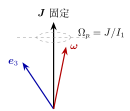
5.5.3主轴稳定性与网球拍定理
考虑刚体绕某一主轴的匀速转动，例如绕主轴 3： \[\omega_1=\omega_2=0,\qquad \omega_3=\Omega.\] 给它一个很小的扰动 \(\delta\omega_1,\delta\omega_2\)。把 \(\omega_3=\Omega\) 代入欧拉方程并保留一阶项： \[I_1\dot{\delta\omega}_1+(I_3-I_2)\Omega\,\delta\omega_2=0, \qquad I_2\dot{\delta\omega}_2+(I_1-I_3)\Omega\,\delta\omega_1=0.\] 由第一式解出 \(\delta\omega_2\)，再代入第二式，得到 \[\ddot{\delta\omega}_1 +\frac{(I_3-I_2)(I_3-I_1)}{I_1I_2}\Omega^2 \delta\omega_1=0. \tag{5.48}\] 稳定性取决于括号的符号： \[(I_3-I_2)(I_3-I_1)>0.\] 这等价于 \(I_3\) 是最大或最小的主转动惯量。因此：
绕最大主轴的转动和绕最小主轴的转动是稳定的；绕中间主轴的转动是不稳定的。这就是网球拍定理，也称中间轴定理。
把网球拍抛向空中，使它绕中间轴旋转，拍面会突然翻转。这不是因为“手抖”，而是中间轴转动对微小扰动指数敏感。理想自由刚体的翻转可由这个模型解释，主动改变形状的运动员则需要变惯量模型。
5.5.4稳定性结论的范围与守恒量检验
上述稳定指体轴角速度靠近一族主轴匀转，或等价地忽略沿旋转相位的累积偏移，并不表示任意小转速误差都产生永远很小的绝对姿态差。设严格 \(I_1<I_2<I_3\)，在固定角动量大小的球面上 \[T=\tfrac12(J_1^2/I_1+J_2^2/I_2+J_3^2/I_3).\] 绕最小惯量轴时能量取最大，绕最大惯量轴时取最小，中间轴为鞍点。更直接地，两守恒量给出 \[J^2-2I_1T=I_2(I_2-I_1)\omega_2^2+I_3(I_3-I_1)\omega_3^2,\] \[2I_3T-J^2=I_1(I_3-I_1)\omega_1^2+I_2(I_3-I_2)\omega_2^2.\] 右端正系数控制相应横向分量，配合能量可证明两极值轴附近的角速度稳定，而不只是依赖线性振荡的猜测。若有重复主惯量，严格中间轴分类退化，须另用对称刚体解；若加入耗散和内部运动，也不再是此无力矩刚体问题。
5.5.5庞索作图：接触平面从哪里来？
为几何解释无力矩运动，固定质心作为平动已扣除的原点，令 \(T>0\) 为恒定转动动能，并在辅助坐标空间定义 \[\mathbf x=\frac{\mathbf{\omega}}{\sqrt{2T}},\qquad \mathbf x^{\mathsf T}\mathbf{I}\mathbf x=1.\] 这里辅助坐标的单位不是长度。该随体转动的椭球在 \(\mathbf x\) 处的法线为 \(\mathbf{I}\mathbf x=\mathbf{J}/\sqrt{2T}\)，所以切平面满足 \[\mathbf{J}\cdot{\mathbf X}=\sqrt{2T}.\] \(\mathbf{J},T\) 均固定，因此这是空间中的不变平面。刚体在当前接触位置的速度正比于 \(\mathbf{\omega}\times\mathbf x=0\)，于是椭球在该平面上无滑动滚动。辅助椭球上的接触迹称极迹，平面上的轨迹称空间极迹。
这幅构造依赖理想无力矩、正定惯量和非零能量；不能把没有能量标度的 \(\mathbf{\omega}\) 直接说成单位惯量椭球上的点。对称刚体的极迹是圆，三主惯量不等时则由能量面与角动量面共同限制。真正的姿态仍需积分 \(\dot R=R[\mathbf{\omega}_b]_\times\) 重构。
5.6对称重刚体与陀螺
5.6.1拉格朗日陀螺
考虑一个对称刚体，绕其对称轴的质量分布对称，固定点 \(O\) 在对称轴上，质心 \(C\) 到 \(O\) 的距离为 \(l\)，质量为 \(m\)。这就是拉格朗日陀螺。
取欧拉角 \(\phi,\theta,\psi\)，对称轴为体轴 3。质心位置为 \[\mathbf{R}_C=l(\sin\theta\sin\phi,-\sin\theta\cos\phi,\cos\theta).\] 因为固定点 \(O\) 不动，总动能就是绕 \(O\) 的转动动能。这里 \(I_1,I_3\) 是对固定点 \(O\) 的主转动惯量，而不是对质心的主转动惯量。于是 \[T=\frac12I_1(\omega_1^2+\omega_2^2)+\frac12I_3\omega_3^2.\] 若改用质心分解，应写成 \[T=\frac12mv_C^2+\frac12I_{C1}(\omega_1^2+\omega_2^2)+\frac12I_{C3}\omega_3^2,\] 其中 \[v_C^2=l^2(\dot\theta^2+\dot\phi^2\sin^2\theta).\] 由平行轴定理 \(I_1=I_{C1}+ml^2\) 可知两式完全等价。 利用本章的欧拉角运动学，把式 (5.6) 和 (5.7) 平方相加： \[\begin{aligned} \omega_1^2+\omega_2^2 &=\dot\phi^2\sin^2\theta(\sin^2\psi+\cos^2\psi) +\dot\theta^2(\cos^2\psi+\sin^2\psi)\\ &\quad+2\dot\phi\dot\theta\sin\theta (\sin\psi\cos\psi-\cos\psi\sin\psi)\\ &=\dot\theta^2+\dot\phi^2\sin^2\theta, \end{aligned}\] 交叉项正好抵消；同时 \[\omega_3=\dot\psi+\dot\phi\cos\theta.\] 因此 \[T=\frac12I_1(\dot\theta^2+\dot\phi^2\sin^2\theta) +\frac12I_3(\dot\psi+\dot\phi\cos\theta)^2. \tag{5.49}\] 势能为 \[V=mgl\cos\theta. \tag{5.50}\] 拉格朗日量为 \[L=\frac12I_1(\dot\theta^2+\dot\phi^2\sin^2\theta) +\frac12I_3(\dot\psi+\dot\phi\cos\theta)^2 -mgl\cos\theta. \tag{5.51}\]
5.6.2守恒量与有效势
\(L\) 不显含 \(\phi\) 和 \(\psi\)，因此有两个循环坐标和两个守恒的广义动量： \[p_\psi=\frac{\partial L}{\partial\dot\psi} =I_3(\dot\psi+\dot\phi\cos\theta)=I_3\omega_3, \tag{5.52}\] \[p_\phi=\frac{\partial L}{\partial\dot\phi} =I_1\dot\phi\sin^2\theta +I_3(\dot\psi+\dot\phi\cos\theta)\cos\theta. \tag{5.53}\] 用 \(p_\psi\) 消去 \(\dot\psi\)，得 \[p_\phi=I_1\dot\phi\sin^2\theta+p_\psi\cos\theta. \tag{5.54}\] 由此可解出进动角速度 \[\dot\phi=\frac{p_\phi-p_\psi\cos\theta}{I_1\sin^2\theta}. \tag{5.55}\] 由式 (5.52) 还可解出 \[\dot\psi=\frac{p_\psi}{I_3}-\dot\phi\cos\theta.\] 把 \(\dot\phi,\dot\psi\) 代回转动动能，得到 \[\begin{aligned} T &=\frac12I_1\dot\theta^2 +\frac12I_1\sin^2\theta \left(\frac{p_\phi-p_\psi\cos\theta}{I_1\sin^2\theta}\right)^2 +\frac{p_\psi^2}{2I_3}\\ &=\frac12I_1\dot\theta^2 +\frac{(p_\phi-p_\psi\cos\theta)^2}{2I_1\sin^2\theta} +\frac{p_\psi^2}{2I_3}. \end{aligned}\] 再加上势能 \(V=mgl\cos\theta\)，能量守恒给出 \[E=\frac12I_1\dot\theta^2 +\frac{(p_\phi-p_\psi\cos\theta)^2}{2I_1\sin^2\theta} +\frac{p_\psi^2}{2I_3} +mgl\cos\theta. \tag{5.56}\] 定义有效势 \[V_{\rm eff}(\theta) =\frac{(p_\phi-p_\psi\cos\theta)^2}{2I_1\sin^2\theta} +mgl\cos\theta. \tag{5.57}\] 则 \[\frac12I_1\dot\theta^2+V_{\rm eff}(\theta) =E-\frac{p_\psi^2}{2I_3} =\text{常数}. \tag{5.58}\] 这样，三维刚体运动被约化为一维的 \(\theta\) 运动。\(\theta(t)\) 描述章动，\(\phi(t)\) 描述进动，\(\psi(t)\) 描述自转。
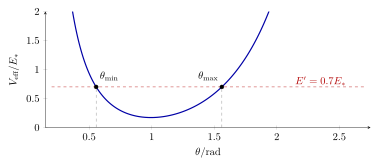
对有效势的正则极小值，略高能量使 \(\theta\) 在两个转折角间章动。进动角速度由式 (5.55) 决定，可能变号，轴的轨迹可出现回绕；不能一律说 \(\phi\) 持续增加。一般 \(p_\phi\ne\pm p_\psi\) 时两端势垒发散，若恰好相等则一端可相消，应回到非奇异姿态坐标判断极轴运动。
5.6.3约化方程与稳恒进动
能量给出容许区间，但在转折点不应除以 \(\dot\theta\) 推导运动方程。固定 \(p_\phi,p_\psi\)，对循环坐标作Routh约化：先取 \(L-p_\phi\dot\phi-p_\psi\dot\psi\)，再代入两速度，得到 \[\mathcal R=\tfrac12I_1\dot\theta^2-V_{\rm eff}(\theta)-\frac{p_\psi^2}{2I_3}.\] 最后常数不影响 \(\theta\) 方程，故所有正则点（含章动转折点）均有 \[I_1\ddot\theta=-V_{\rm eff}'(\theta).\] 这说明消去守恒动量时不能只把速度表达式代回原 \(L\) 再当作同一变分问题。
稳恒进动要求 \(0<\theta_0<\pi\)、\(\dot\theta=0\)、\(\dot\phi=\Omega\)，并记恒定的轴向角动量 \(h=p_\psi=I_3\omega_3\)，\(\omega_3=\dot\psi+\Omega\cos\theta_0\)。从原拉格朗日量取 \(\theta\) 方程， \[I_1\ddot\theta=I_1\dot\phi^2\sin\theta\cos\theta-h\dot\phi\sin\theta+mgl\sin\theta,\] 除以非零 \(\sin\theta_0\) 得 \[I_1\Omega^2\cos\theta_0-h\Omega+mgl=0. \tag{5.59}\] 当 \(c=\cos\theta_0\ne0\) 时 \[\Omega_\pm=\frac{h\pm\sqrt{h^2-4I_1mgl c}}{2I_1c}.\] 给定倾角与轴向自转，先检查判别式；\(c=0\) 时直接回原式得 \(\Omega=mgl/h\)（\(h\ne0\)），不要使用零分母公式。稳恒运动还须选择相容的初始动量 \(p_\phi=I_1\Omega\sin^2\theta_0+h\cos\theta_0\)；只给自转并不能保证从任意静置倾角释放后无章动。
5.6.4慢支、快支及章动频率
设 \(h>0\) 且 \(|4I_1mgl c/h^2|\ll1\)。与弱重力连续相接的一支可以写成无数值相消的形式 \[\Omega_{\rm slow}=\frac{2mgl}{h+\sqrt{h^2-4I_1mgl c}} \simeq\frac{mgl}{h}=\frac{mgl}{I_3\omega_3}. \tag{5.60}\] 另一支在 \(c\ne0\) 时约为 \(h/(I_1c)\)。所谓“快陀螺公式”通常指轴向自转快、进动慢的分支，不能用它替代所有根。若角动量近似为 \(h\mathbf{e}_3\)，重力矩 \(mgl\sin\theta\) 也直接给 \(\Omega h\sin\theta\)，提供独立的力矩核验。这里使用 \(\omega_3\) 而非未经说明的 \(\dot\psi\)；慢支中二者近似相同需要 \(|\Omega\cos\theta|\ll|\omega_3|\)。
固定两个动量，对有效势在正则稳恒角附近求二阶导数。用 \(p_\phi-hc=I_1\Omega\sin^2\theta_0\) 和稳恒方程化简，可得 \[\begin{aligned} V_{\rm eff}''(\theta_0) &=h^2/I_1-3h\Omega c+I_1\Omega^2(1+2c^2)-mgl c\\ &=\frac{(h-2I_1\Omega c)^2}{I_1}+I_1\Omega^2\sin^2\theta_0. \end{aligned}\] 因此小章动满足 \[\omega_n^2=\frac{V_{\rm eff}''(\theta_0)}{I_1} =\left(\frac h{I_1}-2\Omega\cos\theta_0\right)^2 +\Omega^2\sin^2\theta_0. \tag{5.61}\] 对 \(mgl>0\) 的非竖直稳恒支该值为正，给出约化角度的稳定性；不等同于所有角变量差值都永远不积累。慢进动、自转主导时 \(\omega_n\simeq |h|/I_1\)。频率高并不自动意味着初始章动幅度小，幅度仍由相对有效势极小的超额能量决定。
例 1.10 (同一自转对应快、慢两支). 取教学单位使 \(I_1=1,I_3=0.6,mgl=0.3,h=2\)，且 \(\theta_0=\pi/3\)。轴向自转为 \(\omega_3=10/3\)，稳恒根是 \[\Omega_\pm=2\pm\sqrt{3.4}.\] 慢根约 \(0.15609\)，快根约 \(3.84391\)；简单慢支近似 \(mgl/h=0.15\)。两支分别要求不同的 \(p_\phi=1+3\Omega/4\)。代入式 (5.61)，均为正，但数值不同。这个例子说明“给出转子转速”尚未指定进动状态。
例 1.11 (高速重陀螺：先检查近似再报数值). 取理想教学模型 \(m=0.5\,\mathrm{kg},l=0.05\,\mathrm m,g=9.8\,\mathrm{m\,s^{-2}}\)，固定点惯量 \(I_1=0.03,I_3=0.02\,\mathrm{kg\,m^2}\)，轴向 \(\omega_3=3000\,\mathrm{rad\,s^{-1}}\)，\(\theta_0=\pi/3\)，并令初态位于慢稳恒支。此时 \(h=60\,\mathrm{kg\,m^2\,s^{-1}}\)， \[\frac{4I_1mgl\cos\theta_0}{h^2}=4.08\times10^{-6},\qquad \Omega_{\rm slow}\simeq4.0833\times10^{-3}\,\mathrm{rad\,s^{-1}}.\] 相应进动周期约 \(1.539\times10^3\,\mathrm s\)，即25.6分钟；章动频率近似 \(h/I_1=2000\,\mathrm{rad\,s^{-1}}\)。这些是给定模型与相容初态的计算，不是某个实际陀螺仪的规格或性能。
5.6.5竖直睡眠陀螺须单独线性化
\(\theta=0\) 的“睡眠”解是质心在支点上方、对称轴竖直向上的自转。欧拉角在此奇异，不能在约去 \(\sin\theta\) 后直接套用。以轴向单位矢量 \(\mathbf{e}_3\simeq(u,v,1)\) 代替角坐标，保留横向一阶项。由 \[\mathbf{J}=I_1\mathbf{e}_3\times\dot\mathbf{e}_3+h\mathbf{e}_3,\qquad \mathbf{M}=mgl\,\hat z\times\mathbf{e}_3,\] 角动量定理给 \[I_1\ddot u+h\dot v-mgl\,u=0,\qquad I_1\ddot v-h\dot u-mgl\,v=0.\] 令 \(w=u+iv\)，有 \(I_1\ddot w-ih\dot w-mgl\,w=0\)。试 \(w\propto e^{i\sigma t}\)，得到 \[\sigma_\pm=\frac{h\pm\sqrt{h^2-4I_1mgl}}{2I_1}.\] 当 \(h^2>4I_1mgl\)，两个频率实且不同，横向线性扰动有界；低于阈值则有指数增长。等号处重根可产生 \(t e^{i\sigma t}\) 项，不能仅因频率实就宣称线性稳定。这里是含陀螺项的动态稳定化，正是第四章简单“只看势能Hessian”判据之外的情况。
本节只建立固定支点机械转子的模型。振动式陀螺需用科里奥利耦合，光学陀螺需用光路相位；它们可测同一刚体的角速度，但不共享这里的慢进动公式。进一步学习机械陀螺可参看章末Tong与MIT讲义，需掌握循环坐标、线性稳定性与旋转系输运。
5.7刚体碰撞与冲击
5.7.1冲量与冲量矩
当碰撞时间极短、碰撞力极大时，普通力的冲量可以忽略，只保留碰撞冲量。为避免与角动量 \(\mathbf{J}\) 混淆，本节用 \(\mathbf{\mathcal J}\) 表示冲量、\(\mathbf{\mathcal L}_C\)表示对质心的冲量矩： \[\mathbf{\mathcal J}=\int_{t_1}^{t_2}\mathbf{F}\mathrm{d}t, \qquad \mathbf{\mathcal L}_C=\int_{t_1}^{t_2}\mathbf{M}_C\mathrm{d}t. \tag{5.62}\] 碰撞前后，刚体的动量发生突变： \[M(\mathbf{v}_C'-\mathbf{v}_C)=\mathbf{\mathcal J}, \tag{5.63}\] 角动量也发生突变： \[\mathbf{I}_C(\mathbf{\omega}'-\mathbf{\omega})=\mathbf{\mathcal L}_C. \tag{5.64}\] 这里假设碰撞瞬间刚体的位形不变，因此惯量张量不变。
5.7.2刚体碰撞方程
考虑自由刚体上一点 \(P\) 与光滑静止固定面单点碰撞。忽略碰撞期间姿态变化及重力等有限力冲量，没有其他支承冲量；接触只给法向冲量，且三维惯量正定。若有铰支、多点接触或摩擦，需联立相应冲量约束。设接触面法线为 \(\hat{\mathbf{n}}\)，碰撞前接触点法向速度为 \(v_{Pn}\)，碰撞后为 \(v_{Pn}'\)。恢复系数定义为 \[e=-\frac{v_{Pn}'}{v_{Pn}}, \qquad 0\le e\le1. \tag{5.65}\] \(e=0\) 只使碰后该接触点法向速度为零，不意味着刚体停止或永久黏附；在此无摩擦单冲量模型中，\(e=1\) 保持总动能。以下取 \(v_n=|v_{Pn}|>0\) 为接近速度，并取法向冲量 \(J_n\) 沿离开固定面的方向为正。
碰撞过程中，接触点的法向冲量 \(J_n\) 同时改变质心速度和角速度。由式 (5.63) 和 (5.64)， \[\mathbf{v}_C'=\mathbf{v}_C+\frac{J_n}{M}\hat{\mathbf{n}},\] \[\mathbf{\omega}'=\mathbf{\omega}+\mathbf{I}_C^{-1}\left[(\mathbf{r}_P-\mathbf{r}_C)\times J_n\hat{\mathbf{n}}\right].\] 接触点速度 \[\mathbf{v}_P'=\mathbf{v}_C'+\mathbf{\omega}'\times(\mathbf{r}_P-\mathbf{r}_C).\] 令 \(\mathbf{b}=\mathbf{r}_P-\mathbf{r}_C\)。把 \(\mathbf{v}_C'\) 和 \(\mathbf{\omega}'\) 代入，取法向分量： \[v_{Pn}'=v_{Pn}+J_n\left[ \frac1M+\hat{\mathbf{n}}\cdot \left(\mathbf{I}_C^{-1}(\mathbf{b}\times\hat{\mathbf{n}})\times\mathbf{b}\right) \right].\] 利用标量三重积恒等式，方括号中的转动项可写成 \[(\mathbf{b}\times\hat{\mathbf{n}})\cdot \mathbf{I}_C^{-1}(\mathbf{b}\times\hat{\mathbf{n}}).\] 定义有效质量 \(M_{\rm eff}\) 满足 \[\frac1{M_{\rm eff}} =\frac1M +(\mathbf{b}\times\hat{\mathbf{n}})\cdot \mathbf{I}_C^{-1}(\mathbf{b}\times\hat{\mathbf{n}}),\] 则 \[v_{Pn}'=v_{Pn}+\frac{J_n}{M_{\rm eff}}.\] 代入恢复系数 \(v_{Pn}'=-e v_{Pn}\)，得到 \[J_n=-\frac{(1+e)v_{Pn}}{1/M +(\mathbf{b}\times\hat{\mathbf{n}})\cdot \mathbf{I}_C^{-1}(\mathbf{b}\times\hat{\mathbf{n}})}. \tag{5.66}\] 当 \(v_{Pn}<0\)（接触点向固定面接近）时，\(J_n>0\)。对一般刚体，结果依赖于撞击点位置和惯量张量；这正是“击球点”会影响反弹方向的原因。
5.7.3一般单点模型的能量损失
记初接触法向速度 \(v_{Pn}<0\)，\(\mathbf b=\mathbf{r}_P-\mathbf{r}_C\)。展开碰后平动、转动动能，线性冲量项合为 \(J_nv_{Pn}\)，二次项合为 \(J_n^2/(2M_{\rm eff})\)： \[T'-T=J_nv_{Pn}+\frac{J_n^2}{2M_{\rm eff}}.\] 代入 \(J_n=-(1+e)M_{\rm eff}v_{Pn}\)，得 \[T-T'=\frac12M_{\rm eff}(1-e^2)v_{Pn}^2. \tag{5.67}\] 仅在撞击作用线通过质心等无转动效应时，才可把 \(M_{\rm eff}\) 换成总质量。固定碰前状态和接触几何时，\(e=0\) 在本法向模型中损失最大；切向摩擦和多点碰撞的能量不能只由这个恢复系数决定。
例 1.12 (倾斜杆单端碰撞：有效质量不是总质量). 均匀细杆质量 \(m\)、长度 \(l\)，在竖直平面内自由下落，杆与水平夹角 \(60^\circ\)，较低的右端先撞光滑水平面。碰前质心速度为 \(-V\hat y\)、角速度零，恢复系数 \(e=1/2\)，没有其他瞬时约束冲量。采用平面转动惯量 \(I_C=ml^2/12\)，接触臂水平分量 \(b_x=l/4\)，于是 \[\frac1{m_{\rm eff}}=\frac1m+\frac{(l/4)^2}{ml^2/12}=\frac7{4m},\quad J_n=(1+e)m_{\rm eff}V=\frac67mV.\] 碰后质心与角速度为 \[v_{Cy}'=-V+J_n/m=-V/7,\qquad \omega_z'=\frac{(l/4)J_n}{I_C}=\frac{18V}{7l}.\] 接触点速度 \(v_{Pn}'=-V/7+(18V/7l)(l/4)=V/2\)，恰满足恢复系数。损失为 \(3mV^2/14\)，碰后平动与转动动能之和为 \(2mV^2/7\)，与初动能相减一致。杆为理想细杆使轴向惯量退化，但这里只反演非零的平面惯量，并未使用奇异三维张量的逆。
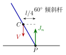
注 1.4. 刚体碰撞模型把碰撞时间理想化为零，把接触力理想化为冲量。这在高频、短时碰撞中很好用，但当接触时间与波传播时间相当时，必须考虑弹性波和局部变形。工程中的落锤、撞击、机器人足端触地，常需要更精细的接触模型。
5.8姿态重构与数值表示
5.8.1转动矩阵的左右乘法
前文欧拉方程求出的是体轴角速度，还要由姿态运动学还原刚体方向。令 \(R\) 把体分量变成空间分量，\(R^{\mathsf T}R=I,\det R=1\)。对固定物质坐标 \(\rho_b\)，\(\rho_S=R\rho_b\)。微分得 \[\dot\rho_S=\dot RR^{\mathsf T}\rho_S=\mathbf{\omega}_S\times\rho_S.\] 又因对 \(RR^{\mathsf T}=I\) 求导可知 \(\dot RR^{\mathsf T}\) 反对称，故 \[\dot R=[\mathbf{\omega}_S]_\times R=R[\mathbf{\omega}_b]_\times,\qquad \mathbf{\omega}_S=R\mathbf{\omega}_b. \tag{5.68}\] \[[\mathbf{\omega}]_\times=\begin{pmatrix}0&-\omega_3&\omega_2\\\omega_3&0&-\omega_1\\-\omega_2&\omega_1&0\end{pmatrix}. \tag{5.69}\] 左右乘法对应不同的分量约定，不能只换下标而不换乘积次序。一般运动另加 \(\mathbf{r}_C(t)\)，不会改变以上姿态方程。
5.8.2单位四元数：给出乘法与转动约定
为避免欧拉角坐标奇异，取标量在前的单位四元数 \(q=(q_0,\mathbf q)\)。本书采用Hamilton乘法 \[(a,\mathbf{u})\otimes(b,\mathbf{v})=(ab-\mathbf{u}\cdot\mathbf{v},\;a\mathbf{v}+b\mathbf{u}+\mathbf{u}\times\mathbf{v}),\] 共轭 \(q^*=(q_0,-\mathbf q)\)，\(q_0^2+|\mathbf q|^2=1\)。主动转动规定为 \[(0,\rho_S)=q\otimes(0,\rho_b)\otimes q^*.\] 展开乘法即得 \[R(q)=(q_0^2-|\mathbf q|^2)I+2\mathbf q\mathbf q^{\mathsf T} +2q_0[\mathbf q]_\times. \tag{5.70}\] 轴角表示为 \(q=(\cos(\theta/2),\hat e\sin(\theta/2))\)，\(q\) 与 \(-q\) 给同一个 \(R\)。单位四元数覆盖所有姿态，但并非一一参数化；没有欧拉角的局部奇异，不代表可以忽略单位长度约束和双覆盖。
在当前乘法约定下，体角速度运动学为 \[\dot q=\tfrac12q\otimes(0,\mathbf{\omega}_b), \qquad \text{或 }\dot q=\tfrac12(0,\mathbf{\omega}_S)\otimes q. \tag{5.71}\] 可由一小步体轴转动 \(q(t+\mathrm{d}t)=q(t)\otimes(1,\mathbf{\omega}_b\mathrm{d}t/2)+O(\mathrm{d}t^2)\) 推出；标量、矢量部分相乘也直接给 \(\mathrm{d}(|q|^2)/\mathrm{d}t=0\)。
例 1.13 (恒定体轴自转与双覆盖). \(\mathbf{\omega}_b=\Omega\hat e_3,q(0)=(1,0,0,0)\) 时， \[q(t)=(\cos(\Omega t/2),0,0,\sin(\Omega t/2)),\quad R(t)=R_z(\Omega t).\] \(t=2\pi/|\Omega|\) 时四元数变为 \((-1,0,0,0)\)，姿态却回到初始。比较两次数值姿态应用 \(R_1^{\mathsf T}R_2\) 或考虑四元数正负等价，不应把 \(q\) 与 \(-q\) 的欧氏差误判为物体翻转。
5.8.3保持姿态约束不等于保持动力学能量
显式Euler步 \(R_{n+1}=R_n(I+hW_n)\)、\(W_n=[\mathbf{\omega}_{b,n}]_\times\)，即使 \(R_n\) 正交，也有 \[R_{n+1}^{\mathsf T}R_{n+1}=I+h^2W_n^{\mathsf T}W_n,\] 所以逐步漂离正交群。可用指数更新 \[R_{n+1}=R_n\exp(h[\mathbf{\omega}_{b,n+1/2}]_\times),\] 每步保持正常转动；若中点角速度足够准确可获得二阶精度，恒定角速度时该步精确。Rodrigues公式为 \[\exp(\vartheta[\hat e]_\times)=I+\sin\vartheta[\hat e]_\times +(1-\cos\vartheta)[\hat e]_\times^2.\] 四元数也可用对应单位增量复合。标准RK4或归一化修正仍须检查误差；仅保持 \(R^{\mathsf T}R=I\) 或 \(|q|=1\) 不保证能量、空间角动量或长期相位准确。
无力矩非对称刚体的体角动量完成闭合路径后，空间姿态未必复原，姿态重构可分出与动力学及闭合路径有关的部分。进一步研究需旋转群、微分方程和约化力学；这里不把它直接等同于量子贝里相位。猫翻身还需要内部形状变化：对正定惯量的单一刚体，\(\mathbf{J}=0\) 意味着 \(\mathbf{\omega}=0\)，不能自行翻身。多刚体内部运动则是不同系统。
5.9进一步探索：平台与反作用轮
5.9.1单轴角动量与内部电机功率
忽略外力矩，平台与轴对称反作用轮绕共同固定方向的主轴转动。平台惯量 \(I_b\) 不含轮；轮的轴向惯量为 \(I_w\)。用 \(\Omega\) 表示平台角速度，\(\nu\) 表示轮相对平台的角速度，则轮的绝对角速度是 \(\Omega+\nu\)。总角动量与动能为 \[J=(I_b+I_w)\Omega+I_w\nu,\qquad T=\tfrac12I_b\Omega^2+\tfrac12I_w(\Omega+\nu)^2.\] 因电机只给内力矩， \[(I_b+I_w)\dot\Omega+I_w\dot\nu=0,\qquad \Delta\Omega=-\frac{I_w}{I_b+I_w}\Delta\nu. \tag{5.72}\] 若电机给轮的力矩为 \(\tau\)，轮与平台分别满足 \[I_w(\dot\Omega+\dot\nu)=\tau,\quad I_b\dot\Omega=-\tau, \quad \dot T=\tau\nu.\] 因此零外力矩不等于机械能不变；电源可把内部能转成机械能。\(\nu\) 为相对转速也是分母包含 \(I_w\) 的原因。
例 1.14 (加速再制动：转速复原，姿态未复原). 取教学参数 \(I_b=9,I_w=1\,\mathrm{kg\,m^2}\)，初始静止。轮相对转速在2秒内匀增到 \(10\,\mathrm{rad\,s^{-1}}\)，则平台末角速度为 \(-1\,\mathrm{rad\,s^{-1}}\)、平台转角为 \(-1\,\mathrm{rad}\)。所需电机力矩 \(\tau=4.5\,\mathrm{N\,m}\)，输入机械能 \[\int_0^2\tau\nu\,\mathrm{d}t=45\,\mathrm J =\tfrac12I_b(-1)^2+\tfrac12I_w(9)^2.\] 随后用相反的恒定力矩，2秒内将相对转速降为零。平台角速度也回零，却又转过 \(-1\,\mathrm{rad}\)，总转角为 \(-2\,\mathrm{rad}\)。理想可逆制动可取回45焦耳机械能，实际电气损失需另加。这个两刚体系统不满足“单一刚体零角动量就不能转动”的前提。
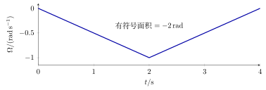
5.9.2外力矩、饱和与三维扩展的边界
若恒定外力矩 \(M_{\rm ext}\) 作用于平台，而控制使 \(\Omega=0\)，则 \(I_w\dot\nu=M_{\rm ext}\)。轮在吸收外部输入的角动量，有限轮速意味着不能无限保持这一状态，需要用外部力矩卸载。NASA的航天器系统介绍也以外力矩积累及卸载说明这一限制，见章末来源；本例不使用具体卫星性能数据。
对轮轴固连于平台、轮为轴对称体的三维模型，取组合质心为原点，可令 \(\mathbf{I}_{\rm lock}\) 为各部件相对锁止时的组合惯量，\(\mathbf h=I_w\nu\mathbf{e}_3\) 为相对自转角动量。体轴中 \[\mathbf{J}_b=\mathbf{I}_{\rm lock}\mathbf{\omega}_b+\mathbf h,\qquad \mathbf{I}_{\rm lock}\dot\mathbf{\omega}_b+\dot{\mathbf h} +\mathbf{\omega}_b\times(\mathbf{I}_{\rm lock}\mathbf{\omega}_b+\mathbf h)=\mathbf{M}_{\rm ext,b}.\] 这里组合惯量可为常数，但总系统不是一个固定形状、各点相对静止的单一刚体。非共轴姿态控制不能逐轴机械套用单轴比例式；需先用总角动量和输运方程建模。
5.10计算与模拟：同时检查动力学和姿态
伴随标准库脚本为 review/verify_ch05.py，结果文件为
ch05_verification_results.json
对离散刚架从质点求和独立构造惯量，检查主轴、本征值、坐标旋转和角动量/能量一致性；数值微分欧拉角矩阵，检查左右角速度约定。
对无力矩欧拉方程同时积分单位四元数，分别记录 \(T,J^2,|q|\) 及空间角动量 \(R(q)\mathbf{I}_b\mathbf{\omega}_b\)。前两个标量正确仍不足以保证姿态重构正确。
用最大轴与中间轴附近的初值比较体轴分量；将步长减半，在相同有限时间内检查收敛。中间轴的早期指数增长只在微扰仍小时与线性公式比较。
以原 \(\theta\) 方程、固定动量的有效势二阶有限差分、守恒能量三种方式核验陀螺；滚动、碰撞和反作用轮还分别检验反力可行性、冲量与能量收支。
模拟参数均为教学设定；RK4不保证长期严格保能，归一化四元数也不能代替动力学收敛检查。
关键概念与常见误区
刚体的一般六自由度需不共线点和可辨位形；非退化薄板仍有正定惯量，严格共线理想点列须处理退化。
\(R\) 的主动/被动、体到空间的约定先于公式；\(\dot R=[\omega_S]_\times R\) 与 \(\dot R=R[\omega_b]_\times\) 对应同一物理运动。
惯量张量依赖参考点和分量基底。只有固定点纯转动或质心自转等合适定义下，才能直接用相应的 \(\mathbf{J}=\mathbf{I}\mathbf{\omega}\)。
约束反力可能改变角动量而不做功；固定轴恒速不保证外力矩为零。静力方程也不保证稳定与接触可实现。
滚动瞬心只保证当前速度为零；静摩擦的零总功率、切向滑动的耗散必须按接触点相对速度区分。
自由进动与重力进动机制不同；轴向快自转对应的慢支、快进动支、章动及竖直睡眠解不能用同一个近似式包办。
碰撞恢复系数只给指定法向速度关系；光滑单点、带摩擦、多点或有铰支的冲量模型不可混用。
本章小结
刚体运动由质心平动与姿态变化组成。惯量张量把动能二次型和角动量联系起来；选质心或固定点、再用输运定理，才能得到不漏项的欧拉方程。自由转动由守恒量限制，重陀螺由循环动量约化为章动有效势，接触与冲击则需额外检查摩擦、单侧反力和冲量假设。内部电机改变组合体机械能而保持总角动量，说明建模时必须区分单一刚体与多刚体系统。
下一章用共轭动量代替速度，在满足正则性条件时把本章及前文的拉格朗日系统转成哈密顿方程。惯量正定与欧拉角坐标奇异是两件不同的事：真实刚体的姿态动力学可以正则，而某个角坐标图仍会在极轴退化。
分层习题
自由度与惯性。 对一般刚体、严格共线点列及单质点分别计数位形自由度。为什么均匀矩形薄板的惯量正定，而理想细杆绕自身轴惯量为零？
转动约定。 分别用 \(R_x(\pi/2)R_z(\pi/2)\) 和 \(R_z(\pi/2)R_x(\pi/2)\) 作用于 \(\hat z\)。对ZXZ欧拉角取 \(\theta\to0\)，说明 \(\dot\phi,\dot\psi\) 为何不能由姿态唯一分开。
角点惯量。 均匀正方薄板质量 \(M\)、边长 \(a\)，以一个角点为原点、两条边为轴，直接积分求完整惯量张量及主惯量，再用质心平行轴公式复算。
物理可实现性。 三个正数 \(I_1=I_2=1,I_3=3\)（同一惯量单位）能否作为真实质量分布对某点的主惯量？证明一般主惯量的三角不等式。
加载梯子。 正文长 \(2L\)、质量 \(M\) 的梯子上站一质量 \(m\) 的人，距底端沿杆距离为 \(s\)，\(0\le s\le2L\)。求不滑所需的最小静摩擦因数，并核验 \(m=0\) 极限。
移动矩心。 用绝对速度与相对速度分别定义对移动点 \(A\) 的角动量，推导各自的输运修正。刚体物质点瞬时速度为零，是否就能当固定点使用？
非主轴恒速。 对受驱倾斜细杆，独立算 \(\dot\mathbf{J}\) 与 \(\mathbf{\omega}\times\mathbf{J}\)，核验所需力矩和零功率；解释恒定转速不等于零外力矩。
复摆最短周期。 刚体质心惯量 \(I_C=m\kappa^2\)，转轴平行移动使轴到质心距离为 \(l>0\)。求周期随 \(l\) 的变化及其最小值，说明不允许的轴位置应另受几何约束。
滚动可行性。 实心圆柱在倾角 \(\beta\) 斜面上从静止滚下，推导加速度、静摩擦和所需最小 \(\mu_s\)；比较摩擦对平动、转动的功率。
击球与滑动。 由正文冲量初态导出实心球进入滚动后的 \(v_r\) 对击球高度 \(h\) 的关系，计算中心击球的能量损失。假设击球期间切向冲量可忽略，随后按恒定动摩擦滑动。
两个进动频率。 无力矩对称刚体取 \(I_1=I_2=2,I_3=3,\omega_3=1\)，横向角速度振幅 \(A=0.3\)（教学单位）。求体分量旋转频率 \(n\)、空间进动率 \(J/I_1\)、能量，并解释二者不同。
中间轴与相位。 \(I_1<I_2<I_3\) 时推导绕中间轴 \(\Omega\) 匀转的线性增长率。若初始角速度仅沿稳定轴增大一个小量，绝对姿态差是否永远小？
稳恒进动。 重陀螺取 \(I_1=1,I_3=0.6,mgl=0.3,h=2,\theta_0=\pi/3\)。求快慢两根及各自 \(p_\phi\)，以固定动量微分有效势检验章动频率。为什么不能保持 \(\Omega\) 不变求二阶导数？
睡眠阈值。 从轴向小偏离 \(u,v\) 推出竖直向上睡眠解的两个横向频率；说明阈值处重根为何不能仅按“频率为实”判稳。
单点冲击。 对一般倾角 \(\theta\) 的均匀杆单端撞光滑水平面，碰前无转动、质心下降速度 \(V\)，求有效质量、冲量及损失。什么几何或约束变化会使本公式不能直接用？
四元数与误差。 用本书乘法展开 \(q\otimes(0,\rho)\otimes q^*\)，核验转动矩阵及 \(q,-q\) 等价。显式Euler姿态步为何漂离正交约束？归一化能否保证保能？
轮速与卸载。 反作用轮两阶段例题中求电机力矩、机械功和净姿态角。若平台固定且有 \(0.1\,\mathrm{N\,m}\) 恒定外力矩，\(I_w=1\)，轮速从10到上限 \(50\,\mathrm{rad\,s^{-1}}\)，还可维持多久？
数值检查。 运行伴随脚本，对自由刚体同时检查 \(T,J^2,|q|\) 与空间 \(\mathbf{J}\)，比较两步长。哪些错误可能保留前两个标量而破坏姿态运动？中间轴增长率应在哪一阶段比较？
解题思路与结果
在正文模型下分别为6、5、3。薄板质量不全在任一过参考点直线上，任一非零转轴都使部分质点有速度，故惯量二次型正；细杆自身线是零速度方向。
两结果分别为 \(-\hat y\) 和 \(\hat x\)。\(\theta=0\) 时 \(R=R_z(\phi+\psi)\)，只剩两角之和，角速度也只含 \(\dot\phi+\dot\psi\) 的轴向组合。
\(I_{xx}=I_{yy}=Ma^2/3,I_{xy}=-Ma^2/4,I_{zz}=2Ma^2/3\)，其余非对角元零。主惯量为 \(Ma^2/12,7Ma^2/12,2Ma^2/3\)；最小轴沿对角线 \((1,1,0)\)。
不能。\(I_1+I_2-I_3=2\int x_3^2\mathrm{d}m\ge0\)，本组违反此式。正定对称矩阵不必就是可实现的惯量张量。
\(N_f=(M+m)g\)，\(N_w=g(M/2+ms/(2L))\cot\theta\)，故 \[\mu_{\min}=\frac{M/2+ms/(2L)}{M+m}\cot\theta.\] 退回 \(m=0\) 得正文结果；还假设人保持相对梯子静止、墙面光滑。
绝对定义给 \(\dot{\mathbf H}_A=\mathbf{M}_A-\mathbf{v}_A\times\mathbf{P}\)，相对定义给式 (5.34)。瞬时 \(\mathbf{v}_A=0\) 不推出 \(\mathbf{a}_A=0\)，也不保证下一时刻仍静止。
两种导数均给 \(-I_\perp\Omega^2\cos\alpha\,\hat z\times\mathbf{u}\)；力矩与 \(\mathbf{\omega}\) 垂直。若用固定转速标量的导数代替角动量矢量导数，就会漏掉此力矩。
\(T=2\pi\sqrt{(\kappa^2+l^2)/(gl)}\)，在可实现的 \(l=\kappa\) 取最小 \(2\pi\sqrt{2\kappa/g}\)。\(l\to0\) 时没有重力线性恢复矩，不能把周期公式写成有限常数。
\(a=2g\sin\beta/3,f=Mg\sin\beta/3,\mu_{s,\min}=\tan\beta/3\)。平动摩擦功率 \(-fv_C\)，转动功率 \(fR\omega\)，无滑动时总和零。
\(v_r=5\mathcal J(1+h/R)/(7M)\)；中心击球 \(v_0=\mathcal J/M,\omega_0=0\)，损失 \(Mv_0^2/7\)，最终为 \(5v_0/7\)。直接滚动高度 \(h=2R/5\) 给零滑动损失。
\(n=1/2\)，\(J=\sqrt{9.36}\)，空间进动率 \(\sqrt{9.36}/2\simeq1.5297\)，\(T=1.59\)。前者观察体轴分量，后者观察空间角动量周围的方向变化。
\(\lambda=|\Omega|\sqrt{(I_2-I_1)(I_3-I_2)/(I_1I_3)}\)。稳定轴上的转速误差使转角差按时间积累；角速度/约化稳定不要求同一绝对相位永远贴近。
\(\Omega=2\pm\sqrt{3.4}\)，\(p_\phi=1+3\Omega/4\)，且 \[\omega_n^2=(2-\Omega)^2+3\Omega^2/4.\] 改变 \(\theta\) 而保持动量时 \(\dot\phi\) 随之变化，不等于固定进动率的另一扰动问题。
\(\sigma_\pm=[h\pm\sqrt{h^2-4I_1mgl}]/(2I_1)\)。等号处二重频率可有线性时间因子，须检验解的有界性；不得只用除过 \(\sin\theta\) 的稳恒式。
\(m_{\rm eff}=m/(1+3\cos^2\theta)\)，\(J_n=(1+e)m_{\rm eff}V\)，损失为 \(m_{\rm eff}(1-e^2)V^2/2\)。多端同时接触、固定铰支、摩擦或表面移动时需重建冲量方程。
展开得式 (5.70)；\(q\) 换号使二次项不变。Euler步产生 \(h^2W^{\mathsf T}W\) 缺陷；保持单位四元数仅控制表示约束，不控制角速度方程的能量误差。
加速、减速力矩分别为 \(\pm4.5\,\mathrm{N\,m}\)，机械功为 \(\pm45\,\mathrm J\)，平台总转角 \(-2\,\mathrm{rad}\)。固定平台时 \(\dot\nu=0.1\,\mathrm{rad\,s^{-2}}\)，余量40，对应400秒；耗尽前须卸载或改变姿态要求。
把体角速度当空间角速度、左右乘次序或符号错误，都可能使姿态重构错而欧拉方程的两个标量仍正确。指数率仅在横向扰动很小、非线性饱和或翻转尚未发生时比较；步长收敛也限指定有限区间。
进一步阅读与来源
查阅日期：2026-11-06。算例按本书惯量参考点、主动转动与ZXZ约定重建，数值参数为教学设定。
David Tong，The Motion of Rigid Bodies，可继续学习自由陀螺、睡眠陀螺和姿态重构；比较公式前先核对转动与惯量约定。
Iain Stewart，MIT 8.09，Chapter 2: Rigid Body Dynamics，对照姿态、惯量与欧拉方程。其坐标变换的取向需与本书体到空间矩阵区分。
MIT 8.09，Problem Set 3，练习从对称性与质量分布独立建立惯量、并使用旋转坐标系。本章题目与解答另行编写。
NASA，Basics of Space Flight, Chapter 11: Onboard Systems，进一步了解反作用轮的角动量积累与外力矩卸载。这里只借其说明模型边界，不将单轴算例当作实际任务控制系统。